Type ? after each primitive in Sage for help and examples.
EXAMPLES:
We draw a curve:
sage:plot(x^2,(x,0,5))Graphics object consisting of 1 graphics primitive
>>>fromsage.allimport*>>>plot(x**Integer(2),(x,Integer(0),Integer(5)))Graphics object consisting of 1 graphics primitive
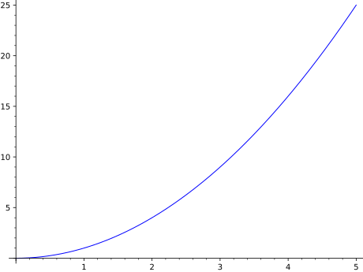
We draw a circle and a curve:
sage:circle((1,1),1)+plot(x^2,(x,0,5))Graphics object consisting of 2 graphics primitives
>>>fromsage.allimport*>>>circle((Integer(1),Integer(1)),Integer(1))+plot(x**Integer(2),(x,Integer(0),Integer(5)))Graphics object consisting of 2 graphics primitives
Notice that the aspect ratio of the above plot makes the plot very tall
because the plot adopts the default aspect ratio of the circle (to make
the circle appear like a circle). We can change the aspect ratio to be
what we normally expect for a plot by explicitly asking for an
‘automatic’ aspect ratio:
The aspect ratio describes the apparently height/width ratio of a unit
square. If you want the vertical units to be twice as big as the
horizontal units, specify an aspect ratio of 2:
However, do not make the figsize too big (e.g. one dimension greater
than 327 or both in the mid-200s) as this will lead to errors or crashes.
See show() for full details.
Note that the axes will not cross if the data is not on both sides of
both axes, even if it is quite close:
sage:plot(x^3,(x,1,10))Graphics object consisting of 1 graphics primitive
>>>fromsage.allimport*>>>plot(x**Integer(3),(x,Integer(1),Integer(10)))Graphics object consisting of 1 graphics primitive
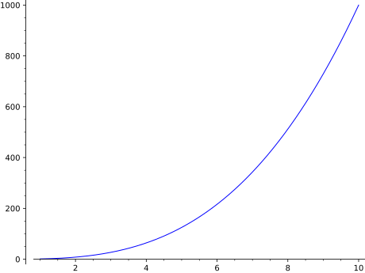
When the labels have quite different orders of magnitude or are very
large, scientific notation (the \(e\) notation for powers of ten) is used:
sage:plot(x^2,(x,480,500))# no scientific notationGraphics object consisting of 1 graphics primitive
>>>fromsage.allimport*>>>plot(x**Integer(2),(x,Integer(480),Integer(500)))# no scientific notationGraphics object consisting of 1 graphics primitive
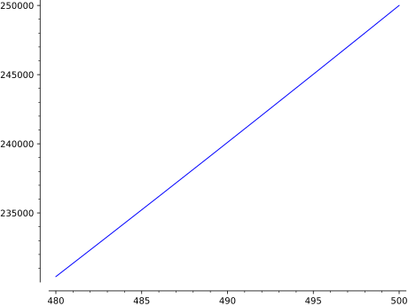
sage:plot(x^2,(x,300,500))# scientific notation on y-axisGraphics object consisting of 1 graphics primitive
>>>fromsage.allimport*>>>plot(x**Integer(2),(x,Integer(300),Integer(500)))# scientific notation on y-axisGraphics object consisting of 1 graphics primitive
But you can fix your own tick labels, if you know what to expect and
have a preference:
sage:plot(x^2,(x,300,500),ticks=[100,50000])Graphics object consisting of 1 graphics primitive
>>>fromsage.allimport*>>>plot(x**Integer(2),(x,Integer(300),Integer(500)),ticks=[Integer(100),Integer(50000)])Graphics object consisting of 1 graphics primitive
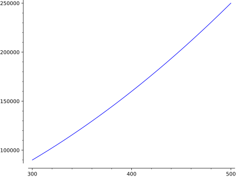
To change the ticks on one axis only, use the following notation:
sage:plot(x^2,(x,300,500),ticks=[None,50000])Graphics object consisting of 1 graphics primitive
>>>fromsage.allimport*>>>plot(x**Integer(2),(x,Integer(300),Integer(500)),ticks=[None,Integer(50000)])Graphics object consisting of 1 graphics primitive
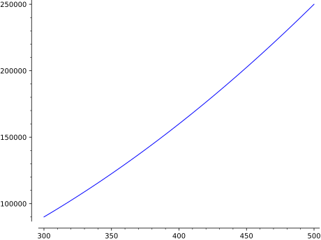
You can even have custom tick labels along with custom positioning.
sage:plot(x^2,(x,0,3),ticks=[[1,2.5],pi/2],tick_formatter=[["$x_1$","$x_2$"],pi])# long timeGraphics object consisting of 1 graphics primitive
>>>fromsage.allimport*>>>plot(x**Integer(2),(x,Integer(0),Integer(3)),ticks=[[Integer(1),RealNumber('2.5')],pi/Integer(2)],tick_formatter=[["$x_1$","$x_2$"],pi])# long timeGraphics object consisting of 1 graphics primitive
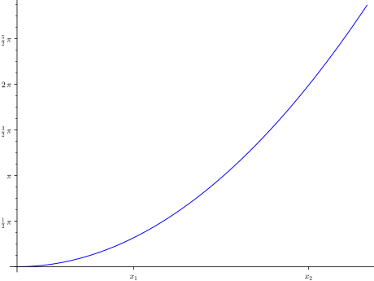
We construct a plot involving several graphics objects:
sage:G=plot(cos(x),(x,-5,5),thickness=5,color='green',title='A plot')sage:P=polygon([[1,2],[5,6],[5,0]],color='red')sage:G+PGraphics object consisting of 2 graphics primitives
>>>fromsage.allimport*>>>G=plot(cos(x),(x,-Integer(5),Integer(5)),thickness=Integer(5),color='green',title='A plot')>>>P=polygon([[Integer(1),Integer(2)],[Integer(5),Integer(6)],[Integer(5),Integer(0)]],color='red')>>>G+PGraphics object consisting of 2 graphics primitives
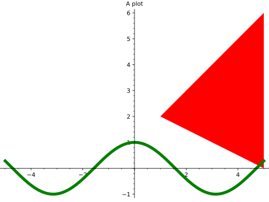
Next we construct the reflection of the above polygon about the
\(y\)-axis by iterating over the list of first-coordinates of
the first graphic element of P (which is the actual
Polygon; note that P is a Graphics object, which consists
of a single polygon):
sage:Q=polygon([(-x,y)forx,yinP[0]],color='blue')sage:Q# show itGraphics object consisting of 1 graphics primitive
>>>fromsage.allimport*>>>Q=polygon([(-x,y)forx,yinP[Integer(0)]],color='blue')>>>Q# show itGraphics object consisting of 1 graphics primitive
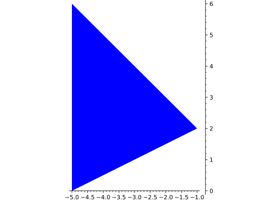
We combine together different graphics objects using “+”:
sage:H=G+P+Qsage:print(H)Graphics object consisting of 3 graphics primitivessage:type(H)<class 'sage.plot.graphics.Graphics'>sage:H[1]Polygon defined by 3 pointssage:list(H[1])[(1.0, 2.0), (5.0, 6.0), (5.0, 0.0)]sage:H# show itGraphics object consisting of 3 graphics primitives
>>>fromsage.allimport*>>>H=G+P+Q>>>print(H)Graphics object consisting of 3 graphics primitives>>>type(H)<class 'sage.plot.graphics.Graphics'>>>>H[Integer(1)]Polygon defined by 3 points>>>list(H[Integer(1)])[(1.0, 2.0), (5.0, 6.0), (5.0, 0.0)]>>>H# show itGraphics object consisting of 3 graphics primitives
We can add a graphics object to another one as an inset:
sage:g1=plot(x^2*sin(1/x),(x,-2,2),axes_labels=['$x$','$y$'])sage:g2=plot(x^2*sin(1/x),(x,-0.3,0.3),axes_labels=['$x$','$y$'],....:frame=True)sage:g1.inset(g2,pos=(0.15,0.7,0.25,0.25))Multigraphics with 2 elements
>>>fromsage.allimport*>>>g1=plot(x**Integer(2)*sin(Integer(1)/x),(x,-Integer(2),Integer(2)),axes_labels=['$x$','$y$'])>>>g2=plot(x**Integer(2)*sin(Integer(1)/x),(x,-RealNumber('0.3'),RealNumber('0.3')),axes_labels=['$x$','$y$'],...frame=True)>>>g1.inset(g2,pos=(RealNumber('0.15'),RealNumber('0.7'),RealNumber('0.25'),RealNumber('0.25')))Multigraphics with 2 elements
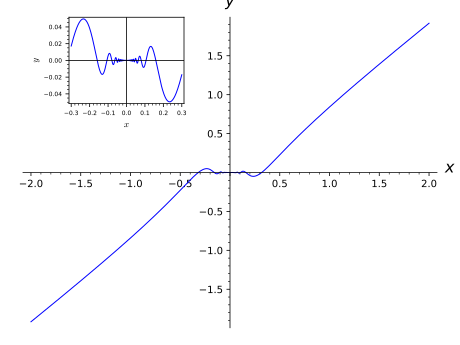
We can add a title to a graph:
sage:plot(x^2,(x,-2,2),title='A plot of $x^2$')Graphics object consisting of 1 graphics primitive
>>>fromsage.allimport*>>>plot(x**Integer(2),(x,-Integer(2),Integer(2)),title='A plot of $x^2$')Graphics object consisting of 1 graphics primitive
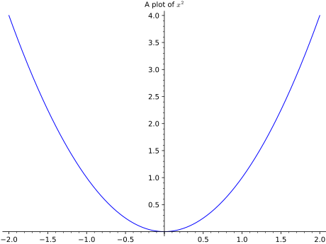
We can set the position of the title:
sage:plot(x^2,(-2,2),title='Plot of $x^2$',title_pos=(0.5,-0.05))Graphics object consisting of 1 graphics primitive
>>>fromsage.allimport*>>>plot(x**Integer(2),(-Integer(2),Integer(2)),title='Plot of $x^2$',title_pos=(RealNumber('0.5'),-RealNumber('0.05')))Graphics object consisting of 1 graphics primitive
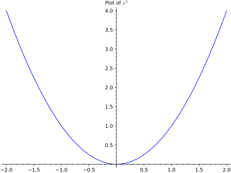
We plot the Riemann zeta function along the critical line and see
the first few zeros:
sage:i=CDF.0# define i this way for maximum speed.sage:p1=plot(lambdat:arg(zeta(0.5+t*i)),1,27,rgbcolor=(0.8,0,0))sage:p2=plot(lambdat:abs(zeta(0.5+t*i)),1,27,color=hue(0.7))sage:print(p1+p2)Graphics object consisting of 2 graphics primitivessage:p1+p2# display itGraphics object consisting of 2 graphics primitives
>>>fromsage.allimport*>>>i=CDF.gen(0)# define i this way for maximum speed.>>>p1=plot(lambdat:arg(zeta(RealNumber('0.5')+t*i)),Integer(1),Integer(27),rgbcolor=(RealNumber('0.8'),Integer(0),Integer(0)))>>>p2=plot(lambdat:abs(zeta(RealNumber('0.5')+t*i)),Integer(1),Integer(27),color=hue(RealNumber('0.7')))>>>print(p1+p2)Graphics object consisting of 2 graphics primitives>>>p1+p2# display itGraphics object consisting of 2 graphics primitives
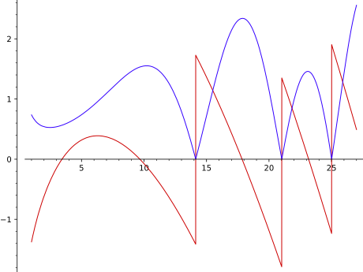
Note
Not all functions in Sage are symbolic. When plotting non-symbolic functions
they should be wrapped in lambda:
sage:plot(lambdax:fibonacci(round(x)),(x,1,10))Graphics object consisting of 1 graphics primitive
>>>fromsage.allimport*>>>plot(lambdax:fibonacci(round(x)),(x,Integer(1),Integer(10)))Graphics object consisting of 1 graphics primitive
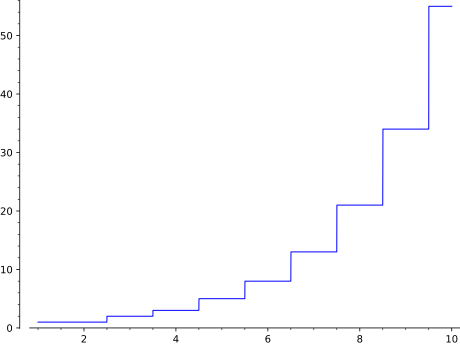
Many concentric circles shrinking toward the origin:
sage:show(sum(circle((i,0),i,hue=sin(i/10))foriin[10,9.9,..,0]))# long time
>>>fromsage.allimport*>>>show(sum(circle((i,Integer(0)),i,hue=sin(i/Integer(10)))foriin(ellipsis_range(Integer(10),RealNumber('9.9'),Ellipsis,Integer(0)))))# long time
sage:g1=plot(sin(x),0,2*pi)sage:g2=plot(cos(x),0,2*pi,linestyle='--')sage:(g1+g2).show(ticks=pi/6,# show their sum, nicely formatted # long time....:tick_formatter=pi)
>>>fromsage.allimport*>>>g1=plot(sin(x),Integer(0),Integer(2)*pi)>>>g2=plot(cos(x),Integer(0),Integer(2)*pi,linestyle='--')>>>(g1+g2).show(ticks=pi/Integer(6),# show their sum, nicely formatted # long time...tick_formatter=pi)
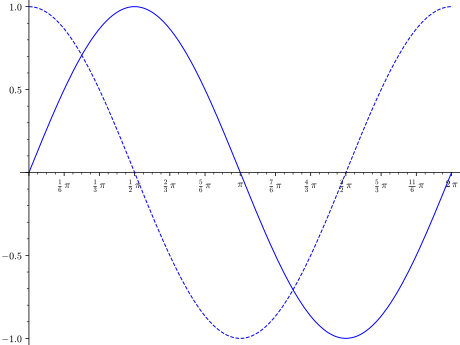
An illustration of integration:
sage:f(x)=(x-3)*(x-5)*(x-7)+40sage:P=line([(2,0),(2,f(2))],color='black')sage:P+=line([(8,0),(8,f(8))],color='black')sage:P+=polygon([(2,0),(2,f(2))]+[(x,f(x))forxin[2,2.1,..,8]]+[(8,0),(2,0)],....:rgbcolor=(0.8,0.8,0.8),aspect_ratio='automatic')sage:P+=text("$\\int_{a}^b f(x) dx$",(5,20),fontsize=16,color='black')sage:P+=plot(f,(1,8.5),thickness=3)sage:P# show the resultGraphics object consisting of 5 graphics primitives
>>>fromsage.allimport*>>>__tmp__=var("x");f=symbolic_expression((x-Integer(3))*(x-Integer(5))*(x-Integer(7))+Integer(40)).function(x)>>>P=line([(Integer(2),Integer(0)),(Integer(2),f(Integer(2)))],color='black')>>>P+=line([(Integer(8),Integer(0)),(Integer(8),f(Integer(8)))],color='black')>>>P+=polygon([(Integer(2),Integer(0)),(Integer(2),f(Integer(2)))]+[(x,f(x))forxin(ellipsis_range(Integer(2),RealNumber('2.1'),Ellipsis,Integer(8)))]+[(Integer(8),Integer(0)),(Integer(2),Integer(0))],...rgbcolor=(RealNumber('0.8'),RealNumber('0.8'),RealNumber('0.8')),aspect_ratio='automatic')>>>P+=text("$\\int_{a}^b f(x) dx$",(Integer(5),Integer(20)),fontsize=Integer(16),color='black')>>>P+=plot(f,(Integer(1),RealNumber('8.5')),thickness=Integer(3))>>>P# show the resultGraphics object consisting of 5 graphics primitives
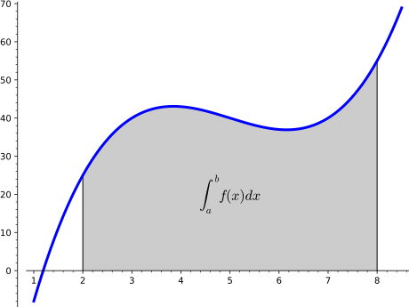
NUMERICAL PLOTTING:
Sage includes Matplotlib, which provides 2D plotting with an interface
that is a likely very familiar to people doing numerical
computation.
You can use plt.clf() to clear the current image frame
and plt.close() to close it.
For example,
sage:importpylabaspltsage:t=plt.arange(0.0,2.0,0.01)sage:s=sin(2*pi*t)sage:P=plt.plot(t,s,linewidth=1.0)sage:xl=plt.xlabel('time (s)')sage:yl=plt.ylabel('voltage (mV)')sage:t=plt.title('About as simple as it gets, folks')sage:plt.grid(True)sage:importtempfilesage:withtempfile.NamedTemporaryFile(suffix='.png')asf1:....:plt.savefig(f1.name)sage:plt.clf()sage:withtempfile.NamedTemporaryFile(suffix='.png')asf2:....:plt.savefig(f2.name)sage:plt.close()sage:plt.imshow([[1,2],[0,1]])<matplotlib.image.AxesImage object at ...>
>>>fromsage.allimport*>>>importpylabasplt>>>t=plt.arange(RealNumber('0.0'),RealNumber('2.0'),RealNumber('0.01'))>>>s=sin(Integer(2)*pi*t)>>>P=plt.plot(t,s,linewidth=RealNumber('1.0'))>>>xl=plt.xlabel('time (s)')>>>yl=plt.ylabel('voltage (mV)')>>>t=plt.title('About as simple as it gets, folks')>>>plt.grid(True)>>>importtempfile>>>withtempfile.NamedTemporaryFile(suffix='.png')asf1:...plt.savefig(f1.name)>>>plt.clf()>>>withtempfile.NamedTemporaryFile(suffix='.png')asf2:...plt.savefig(f2.name)>>>plt.close()>>>plt.imshow([[Integer(1),Integer(2)],[Integer(0),Integer(1)]])<matplotlib.image.AxesImage object at ...>
We test that imshow works as well, verifying that
Issue #2900 is fixed (in Matplotlib).
sage:plt.imshow([[(0.0,0.0,0.0)]])<matplotlib.image.AxesImage object at ...>sage:importtempfilesage:withtempfile.NamedTemporaryFile(suffix='.png')asf:....:plt.savefig(f.name)
>>>fromsage.allimport*>>>plt.imshow([[(RealNumber('0.0'),RealNumber('0.0'),RealNumber('0.0'))]])<matplotlib.image.AxesImage object at ...>>>>importtempfile>>>withtempfile.NamedTemporaryFile(suffix='.png')asf:...plt.savefig(f.name)
Since the above overwrites many Sage plotting functions, we reset
the state of Sage, so that the examples below work!
Alex Clemesha and William Stein (2006-04-10): initial version
David Joyner: examples
Alex Clemesha (2006-05-04) major update
William Stein (2006-05-29): fine tuning, bug fixes, better server
integration
William Stein (2006-07-01): misc polish
Alex Clemesha (2006-09-29): added contour_plot, frame axes, misc
polishing
Robert Miller (2006-10-30): tuning, NetworkX primitive
Alex Clemesha (2006-11-25): added plot_vector_field, matrix_plot,
arrow, bar_chart, Axes class usage (see axes.py)
Bobby Moretti and William Stein (2008-01): Change plot to specify
ranges using the (varname, min, max) notation.
William Stein (2008-01-19): raised the documentation coverage from a
miserable 12 percent to a ‘wopping’ 35 percent, and fixed and
clarified numerous small issues.
Jason Grout (2009-09-05): shifted axes and grid functionality over
to matplotlib; fixed a number of smaller issues.
Jason Grout (2010-10): rewrote aspect ratio portions of the code
Jeroen Demeyer (2012-04-19): move parts of this file to graphics.py (Issue #12857)
Aaron Lauve (2016-07-13): reworked handling of ‘color’ when passed
a list of functions; now more in-line with other CAS’s. Added list functionality
to linestyle and legend_label options as well. (Issue #12962)
The adaptive refinement algorithm for plotting a function f. See
the docstring for plot for a description of the algorithm.
INPUT:
f – a function of one variable
p1, p2 – two points to refine between
adaptive_recursion – (default: \(5\)) how many
levels of recursion to go before giving up when doing adaptive
refinement. Setting this to 0 disables adaptive refinement.
adaptive_tolerance – (default: \(0.01\)) how large
a relative difference should be before the adaptive refinement
code considers it significant; see documentation for generate_plot_points
for more information. See the documentation for plot() for more
information on how the adaptive refinement algorithm works.
excluded – (default: False) also return locations where it has been
discovered that the function is not defined
(y-value will be 'NaN' in this case)
OUTPUT:
A list of points to insert between p1 and
p2 to get a better linear approximation between them.
If excluded, also x-values for which the calculation failed are given
with 'NaN' as y-value.
Calculate plot points for a function f in the interval xrange. The
adaptive refinement algorithm is also automatically invoked with a
relative adaptive tolerance of adaptive_tolerance; see below.
INPUT:
f – a function of one variable
p1, p2 – two points to refine between
plot_points – (default: 5) the minimal number of plot points. (Note
however that in any actual plot a number is passed to this, with default
value 200.)
adaptive_recursion – (default: 5) how many levels of recursion to go
before giving up when doing adaptive refinement. Setting this to 0
disables adaptive refinement.
adaptive_tolerance – (default: 0.01) how large the relative difference
should be before the adaptive refinement code considers it significant. If
the actual difference is greater than adaptive_tolerance*delta, where delta
is the initial subinterval size for the given xrange and plot_points, then
the algorithm will consider it significant.
initial_points – (default: None) a list of x-values that should be evaluated
excluded – (default: False) add a list of discovered x-values, for
which f is not defined
imaginary_tolerance – (default: 1e-8) if an imaginary
number arises (due, for example, to numerical issues), this
tolerance specifies how large it has to be in magnitude before
we raise an error. In other words, imaginary parts smaller than
this are ignored in your plot points.
OUTPUT:
a list of points (x, f(x)) in the interval xrange, which approximate
the function f.
if excluded a tuple consisting of the above and a list of x-values
at which f is not defined
Plot a list of lists (or tuples) of graphics objects on one canvas,
arranged as an array.
INPUT:
array – either a list of lists of
Graphics elements or a
single list of Graphics elements
nrows, ncols – (optional) integers. If both are given then
the input array is flattened and turned into an nrows x
ncols array, with blank graphics objects padded at the end,
if necessary. If only one is specified, the other is chosen
automatically.
sage:# long timesage:f(x)=sin(x)sage:g(x)=sin(2*x)sage:h(x)=sin(4*x)sage:p1=plot(f,(-2*pi,2*pi),color=hue(0.5))sage:p2=plot(g,(-2*pi,2*pi),color=hue(0.9))sage:p3=parametric_plot((f,g),(0,2*pi),color=hue(0.6))sage:p4=parametric_plot((f,h),(0,2*pi),color=hue(1.0))
>>>fromsage.allimport*>>># long time>>>__tmp__=var("x");f=symbolic_expression(sin(x)).function(x)>>>__tmp__=var("x");g=symbolic_expression(sin(Integer(2)*x)).function(x)>>>__tmp__=var("x");h=symbolic_expression(sin(Integer(4)*x)).function(x)>>>p1=plot(f,(-Integer(2)*pi,Integer(2)*pi),color=hue(RealNumber('0.5')))>>>p2=plot(g,(-Integer(2)*pi,Integer(2)*pi),color=hue(RealNumber('0.9')))>>>p3=parametric_plot((f,g),(Integer(0),Integer(2)*pi),color=hue(RealNumber('0.6')))>>>p4=parametric_plot((f,h),(Integer(0),Integer(2)*pi),color=hue(RealNumber('1.0')))
Now make a graphics array out of the plots:
sage:graphics_array(((p1,p2),(p3,p4)))# long timeGraphics Array of size 2 x 2
>>>fromsage.allimport*>>>graphics_array(((p1,p2),(p3,p4)))# long timeGraphics Array of size 2 x 2
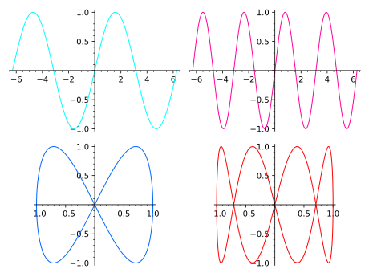
One can also name the array, and then use
show()
or save():
sage:ga=graphics_array(((p1,p2),(p3,p4)))# long timesage:ga.show()# long time; same output as above
>>>fromsage.allimport*>>>ga=graphics_array(((p1,p2),(p3,p4)))# long time>>>ga.show()# long time; same output as above
Here we give only one row:
sage:p1=plot(sin,(-4,4))sage:p2=plot(cos,(-4,4))sage:ga=graphics_array([p1,p2]);gaGraphics Array of size 1 x 2sage:ga.show()
>>>fromsage.allimport*>>>p1=plot(sin,(-Integer(4),Integer(4)))>>>p2=plot(cos,(-Integer(4),Integer(4)))>>>ga=graphics_array([p1,p2]);gaGraphics Array of size 1 x 2>>>ga.show()
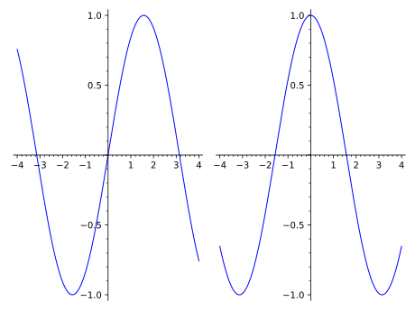
It is possible to use figsize to change the size of the plot
as a whole:
sage:x=var('x')sage:L=[plot(sin(k*x),(x,-pi,pi))forkin[1..3]]sage:ga=graphics_array(L)sage:ga.show(figsize=[5,3])# smallish and compact
>>>fromsage.allimport*>>>x=var('x')>>>L=[plot(sin(k*x),(x,-pi,pi))forkin(ellipsis_range(Integer(1),Ellipsis,Integer(3)))]>>>ga=graphics_array(L)>>>ga.show(figsize=[Integer(5),Integer(3)])# smallish and compact
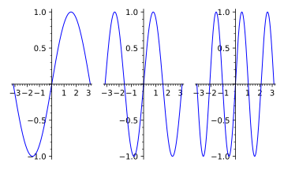
sage:ga.show(figsize=[5,7])# tall and thin; long time
>>>fromsage.allimport*>>>ga.show(figsize=[Integer(5),Integer(7)])# tall and thin; long time
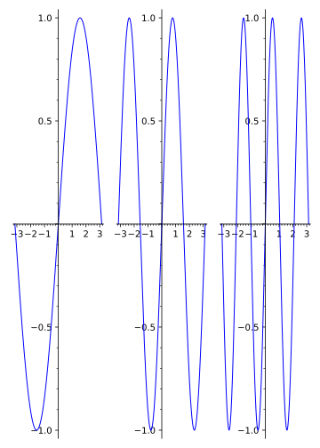
sage:ga.show(figsize=4)# width=4 inches, height fixed from default aspect ratio
>>>fromsage.allimport*>>>ga.show(figsize=Integer(4))# width=4 inches, height fixed from default aspect ratio
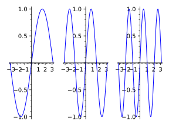
Specifying only the number of rows or the number of columns
computes the other dimension automatically:
list_plot takes either a list of numbers, a list of tuples, a numpy
array, or a dictionary and plots the corresponding points.
If given a list of numbers (that is, not a list of tuples or lists),
list_plot forms a list of tuples (i,x_i) where i goes from
0 to len(data)-1 and x_i is the i-th data value, and puts
points at those tuple values.
list_plot will plot a list of complex numbers in the obvious
way; any numbers for which
CC() makes sense will
work.
list_plot also takes a list of tuples (x_i,y_i) where x_i
and y_i are the i-th values representing the x- and
y-values, respectively.
If given a dictionary, list_plot interprets the keys as
\(x\)-values and the values as \(y\)-values.
The plotjoined=True option tells list_plot to plot a line
joining all the data.
For other keyword options that the list_plot function can
take, refer to plot().
It is possible to pass empty dictionaries, lists, or tuples to
list_plot. Doing so will plot nothing (returning an empty plot).
EXAMPLES:
sage:list_plot([i^2foriinrange(5)])# long timeGraphics object consisting of 1 graphics primitive
>>>fromsage.allimport*>>>list_plot([i**Integer(2)foriinrange(Integer(5))])# long timeGraphics object consisting of 1 graphics primitive
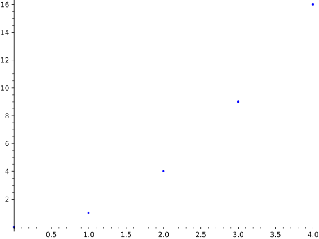
Here are a bunch of random red points:
sage:r=[(random(),random())for_inrange(20)]sage:list_plot(r,color='red')Graphics object consisting of 1 graphics primitive
>>>fromsage.allimport*>>>r=[(random(),random())for_inrange(Integer(20))]>>>list_plot(r,color='red')Graphics object consisting of 1 graphics primitive
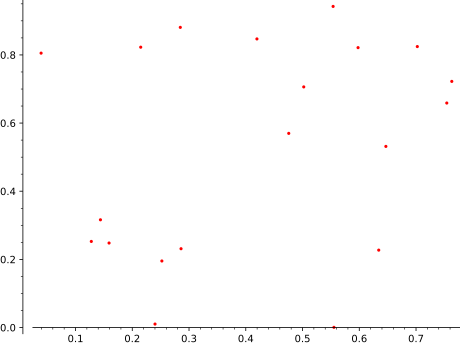
This gives all the random points joined in a purple line:
sage:list_plot(r,plotjoined=True,color='purple')Graphics object consisting of 1 graphics primitive
>>>fromsage.allimport*>>>list_plot(r,plotjoined=True,color='purple')Graphics object consisting of 1 graphics primitive
sage:list_plot(numpy.array([[1,2],[2,3],[3,4]]))# needs numpyGraphics object consisting of 1 graphics primitive
>>>fromsage.allimport*>>>list_plot(numpy.array([[Integer(1),Integer(2)],[Integer(2),Integer(3)],[Integer(3),Integer(4)]]))# needs numpyGraphics object consisting of 1 graphics primitive
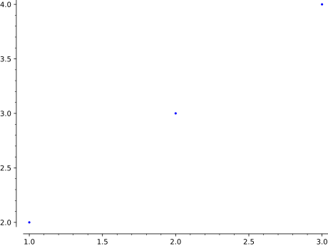
Plot a list of complex numbers:
sage:list_plot([1,I,pi+I/2,CC(.25,.25)])Graphics object consisting of 1 graphics primitive
>>>fromsage.allimport*>>>list_plot([Integer(1),I,pi+I/Integer(2),CC(RealNumber('.25'),RealNumber('.25'))])Graphics object consisting of 1 graphics primitive
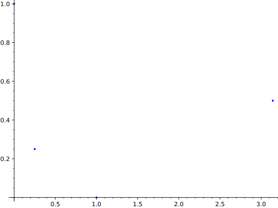
sage:list_plot([exp(I*theta)forthetain[0,.2..pi]])Graphics object consisting of 1 graphics primitive
>>>fromsage.allimport*>>>list_plot([exp(I*theta)forthetain(ellipsis_range(Integer(0),RealNumber('.2'),Ellipsis,pi))])Graphics object consisting of 1 graphics primitive
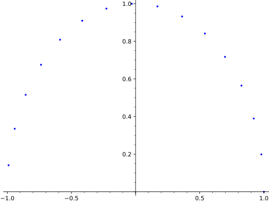
Note that if your list of complex numbers are all actually real,
they get plotted as real values, so this
sage:list_plot([CDF(1),CDF(1/2),CDF(1/3)])Graphics object consisting of 1 graphics primitive
>>>fromsage.allimport*>>>list_plot([CDF(Integer(1)),CDF(Integer(1)/Integer(2)),CDF(Integer(1)/Integer(3))])Graphics object consisting of 1 graphics primitive
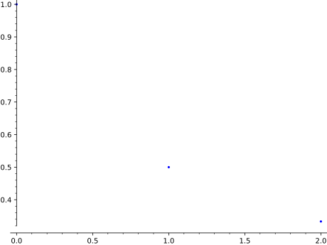
is the same as list_plot([1,1/2,1/3]) – it produces a plot of
the points \((0,1)\), \((1,1/2)\), and \((2,1/3)\).
If you have separate lists of \(x\) values and \(y\) values which you
want to plot against each other, use the zip command to make a
single list whose entries are pairs of \((x,y)\) values, and feed
the result into list_plot:
sage:x_coords=[cos(t)^3fortinsrange(0,2*pi,0.02)]sage:y_coords=[sin(t)^3fortinsrange(0,2*pi,0.02)]sage:list_plot(list(zip(x_coords,y_coords)))Graphics object consisting of 1 graphics primitive
>>>fromsage.allimport*>>>x_coords=[cos(t)**Integer(3)fortinsrange(Integer(0),Integer(2)*pi,RealNumber('0.02'))]>>>y_coords=[sin(t)**Integer(3)fortinsrange(Integer(0),Integer(2)*pi,RealNumber('0.02'))]>>>list_plot(list(zip(x_coords,y_coords)))Graphics object consisting of 1 graphics primitive
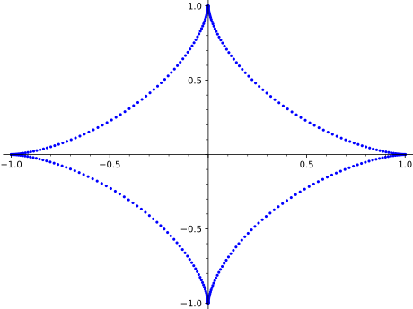
If instead you try to pass the two lists as separate arguments,
you will get an error message:
sage:list_plot(x_coords,y_coords)Traceback (most recent call last):...TypeError: The second argument 'plotjoined' should be boolean (True or False).If you meant to plot two lists 'x' and 'y' against each other,use 'list_plot(list(zip(x,y)))'.
>>>fromsage.allimport*>>>list_plot(x_coords,y_coords)Traceback (most recent call last):...TypeError: The second argument 'plotjoined' should be boolean (True or False).If you meant to plot two lists 'x' and 'y' against each other,use 'list_plot(list(zip(x,y)))'.
Dictionaries with numeric keys and values can be plotted:
sage:list_plot({22:3365,27:3295,37:3135,42:3020,47:2880,52:2735,57:2550})Graphics object consisting of 1 graphics primitive
>>>fromsage.allimport*>>>list_plot({Integer(22):Integer(3365),Integer(27):Integer(3295),Integer(37):Integer(3135),Integer(42):Integer(3020),Integer(47):Integer(2880),Integer(52):Integer(2735),Integer(57):Integer(2550)})Graphics object consisting of 1 graphics primitive
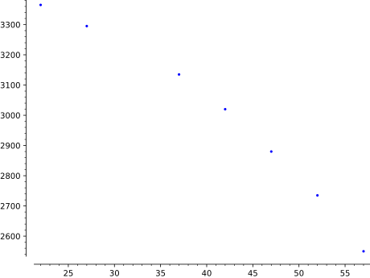
Plotting in logarithmic scale is possible for 2D list plots.
There are two different syntaxes available:
sage:yl=[2**kforkinrange(20)]sage:list_plot(yl,scale='semilogy')# long time # log axis on verticalGraphics object consisting of 1 graphics primitive
>>>fromsage.allimport*>>>yl=[Integer(2)**kforkinrange(Integer(20))]>>>list_plot(yl,scale='semilogy')# long time # log axis on verticalGraphics object consisting of 1 graphics primitive
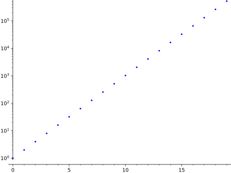
sage:list_plot_semilogy(yl)# sameGraphics object consisting of 1 graphics primitive
>>>fromsage.allimport*>>>list_plot_semilogy(yl)# sameGraphics object consisting of 1 graphics primitive
Warning
If plotjoined is False then the axis that is in log scale
must have all points strictly positive. For instance, the following
plot will show no points in the figure since the points in the
horizontal axis starts from \((0,1)\). Further, matplotlib will display
a user warning.
sage:list_plot(yl,scale='loglog')# both axes are logdoctest:warning...Graphics object consisting of 1 graphics primitive
>>>fromsage.allimport*>>>list_plot(yl,scale='loglog')# both axes are logdoctest:warning...Graphics object consisting of 1 graphics primitive
Instead this will work. We drop the point \((0,1)\).:
sage:list_plot(list(zip(range(1,len(yl)),yl[1:])),scale='loglog')# long timeGraphics object consisting of 1 graphics primitive
>>>fromsage.allimport*>>>list_plot(list(zip(range(Integer(1),len(yl)),yl[Integer(1):])),scale='loglog')# long timeGraphics object consisting of 1 graphics primitive
sage:list_plot_loglog(list(zip(range(1,len(yl)),yl[1:])),base=2)# long timeGraphics object consisting of 1 graphics primitive
>>>fromsage.allimport*>>>list_plot_loglog(list(zip(range(Integer(1),len(yl)),yl[Integer(1):])),base=Integer(2))# long timeGraphics object consisting of 1 graphics primitive
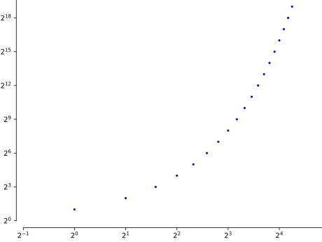
We can also change the scale of the axes in the graphics just before
displaying:
sage:G=list_plot(yl)# long timesage:G.show(scale=('semilogy',2))# long time
>>>fromsage.allimport*>>>G=list_plot(yl)# long time>>>G.show(scale=('semilogy',Integer(2)))# long time
Plot the data in ‘loglog’ scale, that is, both the horizontal and the
vertical axes will be in logarithmic scale.
INPUT:
base – (default: \(10\)) the base of the logarithm; this must be
greater than 1. The base can be also given as a list or tuple
(basex,basey). basex sets the base of the logarithm along the
horizontal axis and basey sets the base along the vertical axis.
For all other inputs, look at the documentation of list_plot().
EXAMPLES:
sage:yl=[5**kforkinrange(10)];xl=[2**kforkinrange(10)]sage:list_plot_loglog(list(zip(xl,yl)))# use loglog scale with base 10 # long timeGraphics object consisting of 1 graphics primitive
>>>fromsage.allimport*>>>yl=[Integer(5)**kforkinrange(Integer(10))];xl=[Integer(2)**kforkinrange(Integer(10))]>>>list_plot_loglog(list(zip(xl,yl)))# use loglog scale with base 10 # long timeGraphics object consisting of 1 graphics primitive
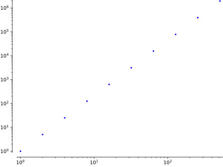
sage:list_plot_loglog(list(zip(xl,yl)),# with base 2.1 on both axes # long time....:base=2.1)Graphics object consisting of 1 graphics primitive
>>>fromsage.allimport*>>>list_plot_loglog(list(zip(xl,yl)),# with base 2.1 on both axes # long time...base=RealNumber('2.1'))Graphics object consisting of 1 graphics primitive
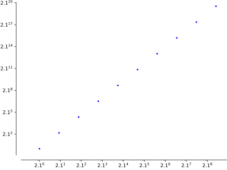
sage:list_plot_loglog(list(zip(xl,yl)),base=(2,5))# long timeGraphics object consisting of 1 graphics primitive
>>>fromsage.allimport*>>>list_plot_loglog(list(zip(xl,yl)),base=(Integer(2),Integer(5)))# long timeGraphics object consisting of 1 graphics primitive
Warning
If plotjoined is False then the axis that is in log scale
must have all points strictly positive. For instance, the following
plot will show no points in the figure since the points in the
horizontal axis starts from \((0,1)\).
sage:yl=[2**kforkinrange(20)]sage:list_plot_loglog(yl)Graphics object consisting of 1 graphics primitive
>>>fromsage.allimport*>>>yl=[Integer(2)**kforkinrange(Integer(20))]>>>list_plot_loglog(yl)Graphics object consisting of 1 graphics primitive
Instead this will work. We drop the point \((0,1)\).:
sage:list_plot_loglog(list(zip(range(1,len(yl)),yl[1:])))Graphics object consisting of 1 graphics primitive
>>>fromsage.allimport*>>>list_plot_loglog(list(zip(range(Integer(1),len(yl)),yl[Integer(1):])))Graphics object consisting of 1 graphics primitive
Plot data in ‘semilogx’ scale, that is, the horizontal axis will be
in logarithmic scale.
INPUT:
base – (default: \(10\)) the base of the logarithm; this must be
greater than 1
For all other inputs, look at the documentation of list_plot().
EXAMPLES:
sage:yl=[2**kforkinrange(12)]sage:list_plot_semilogx(list(zip(yl,yl)))Graphics object consisting of 1 graphics primitive
>>>fromsage.allimport*>>>yl=[Integer(2)**kforkinrange(Integer(12))]>>>list_plot_semilogx(list(zip(yl,yl)))Graphics object consisting of 1 graphics primitive
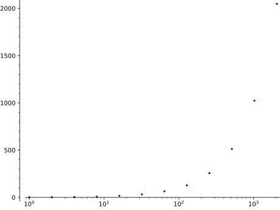
Warning
If plotjoined is False then the horizontal axis must have all
points strictly positive. Otherwise the plot will come up empty.
For instance the following plot contains a point at \((0,1)\).
sage:yl=[2**kforkinrange(12)]sage:list_plot_semilogx(yl)# plot empty due to (0,1)Graphics object consisting of 1 graphics primitive
>>>fromsage.allimport*>>>yl=[Integer(2)**kforkinrange(Integer(12))]>>>list_plot_semilogx(yl)# plot empty due to (0,1)Graphics object consisting of 1 graphics primitive
We remove \((0,1)\) to fix this.:
sage:list_plot_semilogx(list(zip(range(1,len(yl)),yl[1:])))Graphics object consisting of 1 graphics primitive
>>>fromsage.allimport*>>>list_plot_semilogx(list(zip(range(Integer(1),len(yl)),yl[Integer(1):])))Graphics object consisting of 1 graphics primitive
sage:list_plot_semilogx([(1,2),(3,4),(3,-1),(25,3)],base=2)# with base 2Graphics object consisting of 1 graphics primitive
>>>fromsage.allimport*>>>list_plot_semilogx([(Integer(1),Integer(2)),(Integer(3),Integer(4)),(Integer(3),-Integer(1)),(Integer(25),Integer(3))],base=Integer(2))# with base 2Graphics object consisting of 1 graphics primitive
Plot data in ‘semilogy’ scale, that is, the vertical axis will be
in logarithmic scale.
INPUT:
base – (default: \(10\)) the base of the logarithm; this must be
greater than 1
For all other inputs, look at the documentation of list_plot().
EXAMPLES:
sage:yl=[2**kforkinrange(12)]sage:list_plot_semilogy(yl)# plot in semilogy scale, base 10Graphics object consisting of 1 graphics primitive
>>>fromsage.allimport*>>>yl=[Integer(2)**kforkinrange(Integer(12))]>>>list_plot_semilogy(yl)# plot in semilogy scale, base 10Graphics object consisting of 1 graphics primitive
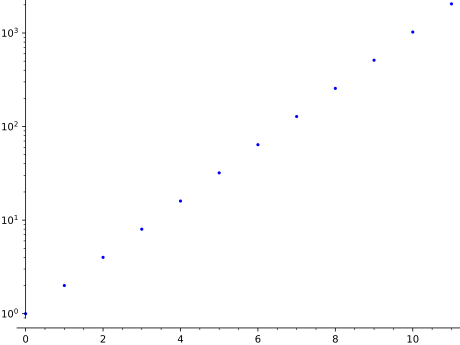
Warning
If plotjoined is False then the vertical axis must have all
points strictly positive. Otherwise the plot will come up empty.
For instance the following plot contains a point at \((1,0)\). Further,
matplotlib will display a user warning.
sage:xl=[2**kforkinrange(12)];yl=range(len(xl))sage:list_plot_semilogy(list(zip(xl,yl)))# plot empty due to (1,0)doctest:warning...Graphics object consisting of 1 graphics primitive
>>>fromsage.allimport*>>>xl=[Integer(2)**kforkinrange(Integer(12))];yl=range(len(xl))>>>list_plot_semilogy(list(zip(xl,yl)))# plot empty due to (1,0)doctest:warning...Graphics object consisting of 1 graphics primitive
We remove \((1,0)\) to fix this.:
sage:list_plot_semilogy(list(zip(xl[1:],yl[1:])))Graphics object consisting of 1 graphics primitive
>>>fromsage.allimport*>>>list_plot_semilogy(list(zip(xl[Integer(1):],yl[Integer(1):])))Graphics object consisting of 1 graphics primitive
sage:list_plot_semilogy([2,4,6,8,16,31],base=2)# with base 2Graphics object consisting of 1 graphics primitive
>>>fromsage.allimport*>>>list_plot_semilogy([Integer(2),Integer(4),Integer(6),Integer(8),Integer(16),Integer(31)],base=Integer(2))# with base 2Graphics object consisting of 1 graphics primitive
Return the minimums and maximums of xdata and ydata.
If dict is False, then minmax_data returns the tuple (xmin, xmax,
ymin, ymax); otherwise, it returns a dictionary whose keys are
‘xmin’, ‘xmax’, ‘ymin’, and ‘ymax’ and whose values are the
corresponding values.
Plot a list of graphics at specified positions on a single canvas.
If the graphics positions define a regular array, use
graphics_array() instead.
INPUT:
graphics_list – list of graphics along with their
positions on the canvas; each element of graphics_list is either
a pair (graphics,position), where graphics is a
Graphics object and position is
the 4-tuple (left,bottom,width,height) specifying the location
and size of the graphics on the canvas, all quantities being in
fractions of the canvas width and height
or a single Graphics object; its position
is then assumed to occupy the whole canvas, except for some padding;
this corresponds to the default position
(left,bottom,width,height)=(0.125,0.11,0.775,0.77)
multi_graphics is to be used for plot arrangements that cannot be
achieved with graphics_array(), for instance:
sage:g1=plot(sin(x),(x,-10,10),frame=True)sage:g2=EllipticCurve([0,0,1,-1,0]).plot(color='red',thickness=2,....:axes_labels=['$x$','$y$']) \
....:+text(r"$y^2 + y = x^3 - x$",(1.2,2),color='red')sage:g3=matrix_plot(matrix([[1,3,5,1],[2,4,5,6],[1,3,5,7]]))sage:G=multi_graphics([(g1,(0.125,0.65,0.775,0.3)),....:(g2,(0.125,0.11,0.4,0.4)),....:(g3,(0.55,0.18,0.4,0.3))])sage:GMultigraphics with 3 elements
>>>fromsage.allimport*>>>g1=plot(sin(x),(x,-Integer(10),Integer(10)),frame=True)>>>g2=EllipticCurve([Integer(0),Integer(0),Integer(1),-Integer(1),Integer(0)]).plot(color='red',thickness=Integer(2),...axes_labels=['$x$','$y$'])+text(r"$y^2 + y = x^3 - x$",(RealNumber('1.2'),Integer(2)),color='red')>>>g3=matrix_plot(matrix([[Integer(1),Integer(3),Integer(5),Integer(1)],[Integer(2),Integer(4),Integer(5),Integer(6)],[Integer(1),Integer(3),Integer(5),Integer(7)]]))>>>G=multi_graphics([(g1,(RealNumber('0.125'),RealNumber('0.65'),RealNumber('0.775'),RealNumber('0.3'))),...(g2,(RealNumber('0.125'),RealNumber('0.11'),RealNumber('0.4'),RealNumber('0.4'))),...(g3,(RealNumber('0.55'),RealNumber('0.18'),RealNumber('0.4'),RealNumber('0.3')))])>>>GMultigraphics with 3 elements
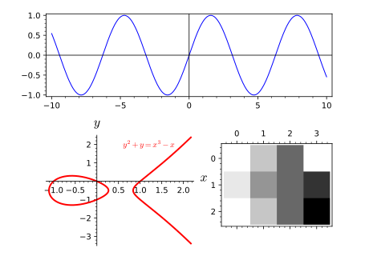
An example with a list containing a graphics object without any specified
position (the graphics, here g3, occupies then the whole canvas):
sage:G=multi_graphics([g3,(g1,(0.4,0.4,0.2,0.2))])sage:GMultigraphics with 2 elements
>>>fromsage.allimport*>>>G=multi_graphics([g3,(g1,(RealNumber('0.4'),RealNumber('0.4'),RealNumber('0.2'),RealNumber('0.2')))])>>>GMultigraphics with 2 elements
parametric_plot() takes two or three functions as a
list or a tuple and makes a plot with the first function giving the
\(x\) coordinates, the second function giving the \(y\)
coordinates, and the third function (if present) giving the
\(z\) coordinates.
EXAMPLES: We draw some 2d parametric plots. Note that the default aspect ratio
is 1, so that circles look like circles.
sage:t=var('t')sage:parametric_plot((cos(t),sin(t)),(t,0,2*pi))Graphics object consisting of 1 graphics primitive
>>>fromsage.allimport*>>>t=var('t')>>>parametric_plot((cos(t),sin(t)),(t,Integer(0),Integer(2)*pi))Graphics object consisting of 1 graphics primitive
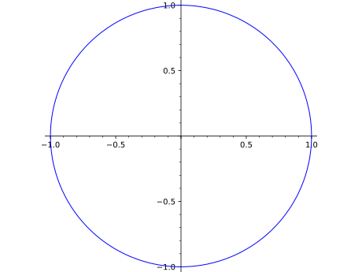
sage:parametric_plot((sin(t),sin(2*t)),(t,0,2*pi),color=hue(0.6))Graphics object consisting of 1 graphics primitive
>>>fromsage.allimport*>>>parametric_plot((sin(t),sin(Integer(2)*t)),(t,Integer(0),Integer(2)*pi),color=hue(RealNumber('0.6')))Graphics object consisting of 1 graphics primitive
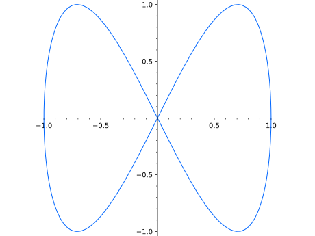
sage:parametric_plot((1,t),(t,0,4))Graphics object consisting of 1 graphics primitive
>>>fromsage.allimport*>>>parametric_plot((Integer(1),t),(t,Integer(0),Integer(4)))Graphics object consisting of 1 graphics primitive
Note that in parametric_plot, there is only fill or no fill.
sage:parametric_plot((t,t^2),(t,-4,4),fill=True)Graphics object consisting of 2 graphics primitives
>>>fromsage.allimport*>>>parametric_plot((t,t**Integer(2)),(t,-Integer(4),Integer(4)),fill=True)Graphics object consisting of 2 graphics primitives
A filled Hypotrochoid:
sage:parametric_plot([cos(x)+2*cos(x/4),sin(x)-2*sin(x/4)],....:(x,0,8*pi),fill=True)Graphics object consisting of 2 graphics primitives
>>>fromsage.allimport*>>>parametric_plot([cos(x)+Integer(2)*cos(x/Integer(4)),sin(x)-Integer(2)*sin(x/Integer(4))],...(x,Integer(0),Integer(8)*pi),fill=True)Graphics object consisting of 2 graphics primitives
sage:parametric_plot((5*cos(x),5*sin(x),x),(x,-12,12),# long time....:plot_points=150,color='red')Graphics3d Object
>>>fromsage.allimport*>>>parametric_plot((Integer(5)*cos(x),Integer(5)*sin(x),x),(x,-Integer(12),Integer(12)),# long time...plot_points=Integer(150),color='red')Graphics3d Object
sage:y=var('y')sage:parametric_plot((5*cos(x),x*y,cos(x*y)),(x,-4,4),(y,-4,4))# long timeGraphics3d Object
>>>fromsage.allimport*>>>y=var('y')>>>parametric_plot((Integer(5)*cos(x),x*y,cos(x*y)),(x,-Integer(4),Integer(4)),(y,-Integer(4),Integer(4)))# long timeGraphics3d Object
sage:t=var('t')sage:parametric_plot(vector((sin(t),sin(2*t))),(t,0,2*pi),color='green')# long timeGraphics object consisting of 1 graphics primitive
>>>fromsage.allimport*>>>t=var('t')>>>parametric_plot(vector((sin(t),sin(Integer(2)*t))),(t,Integer(0),Integer(2)*pi),color='green')# long timeGraphics object consisting of 1 graphics primitive
sage:t=var('t')sage:parametric_plot(vector([t,t+1,t^2]),(t,0,1))# long timeGraphics3d Object
>>>fromsage.allimport*>>>t=var('t')>>>parametric_plot(vector([t,t+Integer(1),t**Integer(2)]),(t,Integer(0),Integer(1)))# long timeGraphics3d Object
Plotting in logarithmic scale is possible with 2D plots. The keyword
aspect_ratio will be ignored if the scale is not 'loglog' or
'linear'.:
sage:parametric_plot((x,x**2),(x,1,10),scale='loglog')Graphics object consisting of 1 graphics primitive
>>>fromsage.allimport*>>>parametric_plot((x,x**Integer(2)),(x,Integer(1),Integer(10)),scale='loglog')Graphics object consisting of 1 graphics primitive
We can also change the scale of the axes in the graphics just before
displaying. In this case, the aspect_ratio must be specified as
'automatic' if the scale is set to 'semilogx' or 'semilogy'. For
other values of the scale parameter, any aspect_ratio can be
used, or the keyword need not be provided.:
where \(X\) is a Sage object (or list of Sage objects) that
either is callable and returns numbers that can be coerced to
floats, or has a plot method that returns a
GraphicPrimitive object.
There are many other specialized 2D plot commands available
in Sage, such as plot_slope_field, as well as various
graphics primitives like Arrow;
type sage.plot.plot? for a current list.
Type plot.options for a dictionary of the default
options for plots. You can change this to change the defaults for
all future plots. Use plot.reset() to reset to the
default options.
PLOT OPTIONS:
plot_points – (default: 200) the minimal number of plot points
adaptive_recursion – (default: 5) how many levels of recursion to go
before giving up when doing adaptive refinement. Setting this to 0
disables adaptive refinement.
adaptive_tolerance – (default: 0.01) how large a difference should be
before the adaptive refinement code considers it significant. See the
documentation further below for more information, starting at “the
algorithm used to insert”.
imaginary_tolerance – (default: 1e-8) if an imaginary
number arises (due, for example, to numerical issues), this
tolerance specifies how large it has to be in magnitude before
we raise an error. In other words, imaginary parts smaller than
this are ignored in your plot points.
base – (default: \(10\)) the base of the logarithm if
a logarithmic scale is set. This must be greater than 1. The base
can be also given as a list or tuple (basex,basey).
basex sets the base of the logarithm along the horizontal
axis and basey sets the base along the vertical axis.
scale – string (default: 'linear'); scale of the axes.
Possible values are 'linear', 'loglog', 'semilogx',
'semilogy'.
The scale can be also be given as single argument that is a list
or tuple (scale,base) or (scale,basex,basey).
The 'loglog' scale sets both the horizontal and vertical axes to
logarithmic scale. The 'semilogx' scale sets the horizontal axis
to logarithmic scale. The 'semilogy' scale sets the vertical axis
to logarithmic scale. The 'linear' scale is the default value
when Graphics is initialized.
xmin – starting x value in the rendered figure. This parameter is
passed directly to the show procedure and it could be overwritten.
xmax – ending x value in the rendered figure. This parameter is passed
directly to the show procedure and it could be overwritten.
ymin – starting y value in the rendered figure. This parameter is
passed directly to the show procedure and it could be overwritten.
ymax – ending y value in the rendered figure. This parameter is passed
directly to the show procedure and it could be overwritten.
detect_poles – boolean (default: False); if set to True poles are detected.
If set to “show” vertical asymptotes are drawn.
legend_label – a (TeX) string serving as the label for \(X\) in the legend.
If \(X\) is a list, then this option can be a single string, or a list or dictionary
with strings as entries/values. If a dictionary, then keys are taken from range(len(X)).
Note
If the scale is 'linear', then irrespective of what
base is set to, it will default to 10 and will remain unused.
If you want to limit the plot along the horizontal axis in the
final rendered figure, then pass the xmin and xmax
keywords to the show() method.
To limit the plot along the vertical axis, ymin and ymax
keywords can be provided to either this plot command or to
the show command.
This function does NOT simply sample equally spaced points
between xmin and xmax. Instead it computes equally spaced points
and adds small perturbations to them. This reduces the possibility
of, e.g., sampling \(\sin\) only at multiples of \(2\pi\), which would
yield a very misleading graph.
If there is a range of consecutive points where the function has
no value, then those points will be excluded from the plot. See
the example below on automatic exclusion of points.
For the other keyword options that the plot function can
take, refer to the method show()
and the further options below.
COLOR OPTIONS:
color – (default: 'blue') one of:
an RGB tuple (r,g,b) with each of r,g,b between 0 and 1.
a color name as a string (e.g., 'purple').
an HTML color such as ‘#aaff0b’.
a list or dictionary of colors (valid only if \(X\) is a list):
if a dictionary, keys are taken from range(len(X));
the entries/values of the list/dictionary may be any of the options above.
'automatic' – maps to default (‘blue’) if \(X\) is a single Sage object; and
maps to a fixed sequence of regularly spaced colors if \(X\) is a list
legend_color – the color of the text for \(X\) (or each item in \(X\)) in the legend.
Default color is ‘black’. Options are as in color above, except that the choice ‘automatic’ maps to ‘black’ if \(X\) is a single Sage object
fillcolor – the color of the fill for the plot of \(X\) (or each item in \(X\)).
Default color is ‘gray’ if \(X\) is a single Sage object or if color is a single color. Otherwise, options are as in color above
APPEARANCE OPTIONS:
The following options affect the appearance of
the line through the points on the graph of \(X\) (these are
the same as for the line function):
INPUT:
alpha – how transparent the line is
thickness – how thick the line is
rgbcolor – the color as an RGB tuple
hue – the color given as a hue
LINE OPTIONS:
Any MATPLOTLIB line option may also be passed in. E.g.,
linestyle – (default: '-') the style of the line, which is one of
'-' or 'solid'
'--' or 'dashed'
'-.' or 'dashdot'
':' or 'dotted'
"None" or "" or "" (nothing)
a list or dictionary (see below)
The linestyle can also be prefixed with a drawing style (e.g., 'steps--')
'default' (connect the points with straight lines)
'steps' or 'steps-pre' (step function; horizontal
line is to the left of point)
'steps-mid' (step function; points are in the middle of
horizontal lines)
'steps-post' (step function; horizontal line is to the
right of point)
If \(X\) is a list, then linestyle may be a list (with entries
taken from the strings above) or a dictionary (with keys in range(len(X))
and values taken from the strings above).
marker – the style of the markers, which is one of
markeredgewidth – the size of the marker edge in points
exclude – (default: None) values which are excluded from the plot range.
Either a list of real numbers, or an equation in one variable.
FILLING OPTIONS:
fill – boolean (default: False); one of:
“axis” or True: Fill the area between the function and the x-axis.
“min”: Fill the area between the function and its minimal value.
“max”: Fill the area between the function and its maximal value.
a number c: Fill the area between the function and the horizontal line y = c.
a function g: Fill the area between the function that is plotted and g.
a dictionary d (only if a list of functions are plotted):
The keys of the dictionary should be integers.
The value of d[i] specifies the fill options for the i-th function
in the list. If d[i]==[j]: Fill the area between the i-th and
the j-th function in the list. (But if d[i]==j: Fill the area
between the i-th function in the list and the horizontal line y = j.)
fillalpha – (default: 0.5) how transparent the fill is;
a number between 0 and 1
MATPLOTLIB STYLE SHEET OPTION:
stylesheet – (default: classic) support for loading a full matplotlib style sheet.
Any style sheet listed in matplotlib.pyplot.style.available is acceptable. If a
non-existing style is provided the default classic is applied.
EXAMPLES:
We plot the \(\sin\) function:
sage:P=plot(sin,(0,10));print(P)Graphics object consisting of 1 graphics primitivesage:len(P)# number of graphics primitives1sage:len(P[0])# how many points were computed (random)225sage:P# renderGraphics object consisting of 1 graphics primitive
>>>fromsage.allimport*>>>P=plot(sin,(Integer(0),Integer(10)));print(P)Graphics object consisting of 1 graphics primitive>>>len(P)# number of graphics primitives1>>>len(P[Integer(0)])# how many points were computed (random)225>>>P# renderGraphics object consisting of 1 graphics primitive
sage:P=plot(sin,(0,10),plot_points=10);print(P)Graphics object consisting of 1 graphics primitivesage:len(P[0])# random output32sage:P# renderGraphics object consisting of 1 graphics primitive
>>>fromsage.allimport*>>>P=plot(sin,(Integer(0),Integer(10)),plot_points=Integer(10));print(P)Graphics object consisting of 1 graphics primitive>>>len(P[Integer(0)])# random output32>>>P# renderGraphics object consisting of 1 graphics primitive
We plot with randomize=False, which makes the initial sample points
evenly spaced (hence always the same). Adaptive plotting might
insert other points, however, unless adaptive_recursion=0.
sage:plot(sin,0,10,color='purple')Graphics object consisting of 1 graphics primitive
>>>fromsage.allimport*>>>plot(sin,Integer(0),Integer(10),color='purple')Graphics object consisting of 1 graphics primitive
sage:plot(sin,0,10,color='#ff00ff')Graphics object consisting of 1 graphics primitive
>>>fromsage.allimport*>>>plot(sin,Integer(0),Integer(10),color='#ff00ff')Graphics object consisting of 1 graphics primitive
We plot several functions together by passing a list of functions
as input:
sage:plot([x*exp(-n*x^2)/.4fornin[1..5]],(0,2),aspect_ratio=.8)Graphics object consisting of 5 graphics primitives
>>>fromsage.allimport*>>>plot([x*exp(-n*x**Integer(2))/RealNumber('.4')fornin(ellipsis_range(Integer(1),Ellipsis,Integer(5)))],(Integer(0),Integer(2)),aspect_ratio=RealNumber('.8'))Graphics object consisting of 5 graphics primitives
By default, color will change from one primitive to the next.
This may be controlled by modifying color option:
sage:g1=plot([x*exp(-n*x^2)/.4fornin[1..3]],(0,2),....:color='blue',aspect_ratio=.8);g1Graphics object consisting of 3 graphics primitivessage:g2=plot([x*exp(-n*x^2)/.4fornin[1..3]],(0,2),....:color=['red','red','green'],linestyle=['-','--','-.'],....:aspect_ratio=.8);g2Graphics object consisting of 3 graphics primitives
>>>fromsage.allimport*>>>g1=plot([x*exp(-n*x**Integer(2))/RealNumber('.4')fornin(ellipsis_range(Integer(1),Ellipsis,Integer(3)))],(Integer(0),Integer(2)),...color='blue',aspect_ratio=RealNumber('.8'));g1Graphics object consisting of 3 graphics primitives>>>g2=plot([x*exp(-n*x**Integer(2))/RealNumber('.4')fornin(ellipsis_range(Integer(1),Ellipsis,Integer(3)))],(Integer(0),Integer(2)),...color=['red','red','green'],linestyle=['-','--','-.'],...aspect_ratio=RealNumber('.8'));g2Graphics object consisting of 3 graphics primitives
While plotting real functions, imaginary numbers that are “almost
real” will inevitably arise due to numerical issues. By tweaking
the imaginary_tolerance, you can decide how large of an
imaginary part you’re willing to sweep under the rug in order to
plot the corresponding point. If a particular value’s imaginary
part has magnitude larger than imaginary_tolerance, that point
will not be plotted. The default tolerance is 1e-8, so the
imaginary part in the first example below is ignored, but the
second example “fails,” emits a warning, and produces an empty
graph:
sage:f=x+I*1e-12sage:plot(f,x,-1,1)Graphics object consisting of 1 graphics primitivesage:plot(f,x,-1,1,imaginary_tolerance=0)...WARNING:...Unabletocompute...Graphics object consisting of 0 graphics primitives
>>>fromsage.allimport*>>>f=x+I*RealNumber('1e-12')>>>plot(f,x,-Integer(1),Integer(1))Graphics object consisting of 1 graphics primitive>>>plot(f,x,-Integer(1),Integer(1),imaginary_tolerance=Integer(0))...WARNING:...Unabletocompute...Graphics object consisting of 0 graphics primitives
We can also build a plot step by step from an empty plot:
sage:a=plot([]);a# passing an empty list returns an empty plot (Graphics() object)Graphics object consisting of 0 graphics primitivessage:a+=plot(x**2);a# append another plotGraphics object consisting of 1 graphics primitive
>>>fromsage.allimport*>>>a=plot([]);a# passing an empty list returns an empty plot (Graphics() object)Graphics object consisting of 0 graphics primitives>>>a+=plot(x**Integer(2));a# append another plotGraphics object consisting of 1 graphics primitive
sage:a+=plot(x**3);a# append yet another plotGraphics object consisting of 2 graphics primitives
>>>fromsage.allimport*>>>a+=plot(x**Integer(3));a# append yet another plotGraphics object consisting of 2 graphics primitives
The function \(\sin(1/x)\) wiggles wildly near \(0\).
Sage adapts to this and plots extra points near the origin.
sage:plot(sin(1/x),(x,-1,1))Graphics object consisting of 1 graphics primitive
>>>fromsage.allimport*>>>plot(sin(Integer(1)/x),(x,-Integer(1),Integer(1)))Graphics object consisting of 1 graphics primitive
Via the matplotlib library, Sage makes it easy to tell whether
a graph is on both sides of both axes, as the axes only cross
if the origin is actually part of the viewing area:
sage:plot(x^3,(x,0,2))# this one has the originGraphics object consisting of 1 graphics primitive
>>>fromsage.allimport*>>>plot(x**Integer(3),(x,Integer(0),Integer(2)))# this one has the originGraphics object consisting of 1 graphics primitive
sage:plot(x^3,(x,1,2))# this one does notGraphics object consisting of 1 graphics primitive
>>>fromsage.allimport*>>>plot(x**Integer(3),(x,Integer(1),Integer(2)))# this one does notGraphics object consisting of 1 graphics primitive
Another thing to be aware of with axis labeling is that when
the labels have quite different orders of magnitude or are very
large, scientific notation (the \(e\) notation for powers of ten) is used:
sage:plot(x^2,(x,480,500))# this one has no scientific notationGraphics object consisting of 1 graphics primitive
>>>fromsage.allimport*>>>plot(x**Integer(2),(x,Integer(480),Integer(500)))# this one has no scientific notationGraphics object consisting of 1 graphics primitive
sage:plot(x^2,(x,300,500))# this one has scientific notation on y-axisGraphics object consisting of 1 graphics primitive
>>>fromsage.allimport*>>>plot(x**Integer(2),(x,Integer(300),Integer(500)))# this one has scientific notation on y-axisGraphics object consisting of 1 graphics primitive
You can put a legend with legend_label (the legend is only put
once in the case of multiple functions):
sage:plot(exp(x),0,2,legend_label='$e^x$')Graphics object consisting of 1 graphics primitive
>>>fromsage.allimport*>>>plot(exp(x),Integer(0),Integer(2),legend_label='$e^x$')Graphics object consisting of 1 graphics primitive
Sage understands TeX, so these all are slightly different, and you can choose
one based on your needs:
sage:plot(sin,legend_label='sin')Graphics object consisting of 1 graphics primitive
>>>fromsage.allimport*>>>plot(sin,legend_label='sin')Graphics object consisting of 1 graphics primitive
sage:plot(sin,legend_label='$sin$')Graphics object consisting of 1 graphics primitive
>>>fromsage.allimport*>>>plot(sin,legend_label='$sin$')Graphics object consisting of 1 graphics primitive
sage:plot(sin,legend_label=r'$\sin$')Graphics object consisting of 1 graphics primitive
>>>fromsage.allimport*>>>plot(sin,legend_label=r'$\sin$')Graphics object consisting of 1 graphics primitive
It is possible to use a different color for the text of each label:
sage:p1=plot(sin,legend_label='sin',legend_color='red')sage:p2=plot(cos,legend_label='cos',legend_color='green')sage:p1+p2Graphics object consisting of 2 graphics primitives
>>>fromsage.allimport*>>>p1=plot(sin,legend_label='sin',legend_color='red')>>>p2=plot(cos,legend_label='cos',legend_color='green')>>>p1+p2Graphics object consisting of 2 graphics primitives
Prior to Issue #19485, legends by default had a shadowless gray
background. This behavior can be recovered by setting the legend
options on your plot object:
If \(X\) is a list of Sage objects and legend_label is ‘automatic’, then Sage will
create labels for each function according to their internal representation:
sage:plot([sin(x),tan(x),1-x^2],legend_label='automatic')Graphics object consisting of 3 graphics primitives
>>>fromsage.allimport*>>>plot([sin(x),tan(x),Integer(1)-x**Integer(2)],legend_label='automatic')Graphics object consisting of 3 graphics primitives
If legend_label is any single string other than ‘automatic’,
then it is repeated for all members of \(X\):
sage:plot([sin(x),tan(x)],color='blue',legend_label='trig')Graphics object consisting of 2 graphics primitives
>>>fromsage.allimport*>>>plot([sin(x),tan(x)],color='blue',legend_label='trig')Graphics object consisting of 2 graphics primitives
Note that the independent variable may be omitted if there is no
ambiguity:
sage:plot(sin(1.0/x),(-1,1))Graphics object consisting of 1 graphics primitive
>>>fromsage.allimport*>>>plot(sin(RealNumber('1.0')/x),(-Integer(1),Integer(1)))Graphics object consisting of 1 graphics primitive
Plotting in logarithmic scale is possible for 2D plots. There
are two different syntaxes supported:
sage:plot(exp,(1,10),scale='semilogy')# log axis on verticalGraphics object consisting of 1 graphics primitive
>>>fromsage.allimport*>>>plot(exp,(Integer(1),Integer(10)),scale='semilogy')# log axis on verticalGraphics object consisting of 1 graphics primitive
sage:plot_semilogy(exp,(1,10))# same thingGraphics object consisting of 1 graphics primitive
>>>fromsage.allimport*>>>plot_semilogy(exp,(Integer(1),Integer(10)))# same thingGraphics object consisting of 1 graphics primitive
sage:plot_loglog(exp,(1,10))# both axes are logGraphics object consisting of 1 graphics primitive
>>>fromsage.allimport*>>>plot_loglog(exp,(Integer(1),Integer(10)))# both axes are logGraphics object consisting of 1 graphics primitive
sage:plot(exp,(1,10),scale='loglog',base=2)# base of log is 2 # long timeGraphics object consisting of 1 graphics primitive
>>>fromsage.allimport*>>>plot(exp,(Integer(1),Integer(10)),scale='loglog',base=Integer(2))# base of log is 2 # long timeGraphics object consisting of 1 graphics primitive
We can also change the scale of the axes in the graphics just before
displaying:
sage:G=plot(exp,1,10)# long timesage:G.show(scale=('semilogy',2))# long time
>>>fromsage.allimport*>>>G=plot(exp,Integer(1),Integer(10))# long time>>>G.show(scale=('semilogy',Integer(2)))# long time
The algorithm used to insert extra points is actually pretty
simple. On the picture drawn by the lines below:
You have the function (in blue) and its approximation (in green)
passing through the points A and B. The algorithm finds the
midpoint C of AB and computes the distance between C and D. If that
distance exceeds the adaptive_tolerance threshold (relative to
the size of the initial plot subintervals), the point D is
added to the curve. If D is added to the curve, then the
algorithm is applied recursively to the points A and D, and D and
B. It is repeated adaptive_recursion times (5, by default).
The actual sample points are slightly randomized, so the above
plots may look slightly different each time you draw them.
We draw the graph of an elliptic curve as the union of graphs of 2
functions.
sage:defh1(x):returnabs(sqrt(x^3-1))sage:defh2(x):return-abs(sqrt(x^3-1))sage:P=plot([h1,h2],1,4)sage:P# show the resultGraphics object consisting of 2 graphics primitives
>>>fromsage.allimport*>>>defh1(x):returnabs(sqrt(x**Integer(3)-Integer(1)))>>>defh2(x):return-abs(sqrt(x**Integer(3)-Integer(1)))>>>P=plot([h1,h2],Integer(1),Integer(4))>>>P# show the resultGraphics object consisting of 2 graphics primitives
It is important to mention that when we draw several graphs at the same time,
parameters xmin, xmax, ymin and ymax are just passed directly
to the show procedure. In fact, these parameters would be overwritten:
sage:plot(sin(x),(x,0,10),linestyle='-.')Graphics object consisting of 1 graphics primitive
>>>fromsage.allimport*>>>plot(sin(x),(x,Integer(0),Integer(10)),linestyle='-.')Graphics object consisting of 1 graphics primitive
If we have an empty linestyle and specify a marker, we can see the
points that are actually being plotted:
sage:plot(sin(x),(x,0,10),plot_points=20,linestyle='',marker='.')Graphics object consisting of 1 graphics primitive
>>>fromsage.allimport*>>>plot(sin(x),(x,Integer(0),Integer(10)),plot_points=Integer(20),linestyle='',marker='.')Graphics object consisting of 1 graphics primitive
The marker can be a TeX symbol as well:
sage:plot(sin(x),(x,0,10),plot_points=20,linestyle='',marker=r'$\checkmark$')Graphics object consisting of 1 graphics primitive
>>>fromsage.allimport*>>>plot(sin(x),(x,Integer(0),Integer(10)),plot_points=Integer(20),linestyle='',marker=r'$\checkmark$')Graphics object consisting of 1 graphics primitive
Sage currently ignores points that cannot be evaluated
sage:fromsage.misc.verboseimportset_verbosesage:set_verbose(-1)sage:plot(-x*log(x),(x,0,1))# this works fine since the failed endpoint is just skipped.Graphics object consisting of 1 graphics primitivesage:set_verbose(0)
>>>fromsage.allimport*>>>fromsage.misc.verboseimportset_verbose>>>set_verbose(-Integer(1))>>>plot(-x*log(x),(x,Integer(0),Integer(1)))# this works fine since the failed endpoint is just skipped.Graphics object consisting of 1 graphics primitive>>>set_verbose(Integer(0))
This prints out a warning and plots where it can (we turn off the
warning by setting the verbose mode temporarily to -1.)
sage:set_verbose(-1)sage:plot(x^(1/3),(x,-1,1))Graphics object consisting of 1 graphics primitivesage:set_verbose(0)
>>>fromsage.allimport*>>>set_verbose(-Integer(1))>>>plot(x**(Integer(1)/Integer(3)),(x,-Integer(1),Integer(1)))Graphics object consisting of 1 graphics primitive>>>set_verbose(Integer(0))
Plotting the real cube root function for negative input requires avoiding
the complex numbers one would usually get. The easiest way is to use
real_nth_root(x,n)
sage:plot(real_nth_root(x,3),(x,-1,1))Graphics object consisting of 1 graphics primitive
>>>fromsage.allimport*>>>plot(real_nth_root(x,Integer(3)),(x,-Integer(1),Integer(1)))Graphics object consisting of 1 graphics primitive
We can also get the same plot in the following way:
sage:plot(sign(x)*abs(x)^(1/3),(x,-1,1))Graphics object consisting of 1 graphics primitive
>>>fromsage.allimport*>>>plot(sign(x)*abs(x)**(Integer(1)/Integer(3)),(x,-Integer(1),Integer(1)))Graphics object consisting of 1 graphics primitive
A way to plot other functions without symbolic variants is to use lambda
functions:
sage:plot(lambdax:RR(x).nth_root(3),(x,-1,1))Graphics object consisting of 1 graphics primitive
>>>fromsage.allimport*>>>plot(lambdax:RR(x).nth_root(Integer(3)),(x,-Integer(1),Integer(1)))Graphics object consisting of 1 graphics primitive
sage:p1=plot(sin(x),-pi,pi,fill='axis')sage:p2=plot(sin(x),-pi,pi,fill='min',fillalpha=1)sage:p3=plot(sin(x),-pi,pi,fill='max')sage:p4=plot(sin(x),-pi,pi,fill=(1-x)/3,....:fillcolor='blue',fillalpha=.2)sage:graphics_array([[p1,p2],# long time....:[p3,p4]]).show(frame=True,axes=False)
>>>fromsage.allimport*>>>p1=plot(sin(x),-pi,pi,fill='axis')>>>p2=plot(sin(x),-pi,pi,fill='min',fillalpha=Integer(1))>>>p3=plot(sin(x),-pi,pi,fill='max')>>>p4=plot(sin(x),-pi,pi,fill=(Integer(1)-x)/Integer(3),...fillcolor='blue',fillalpha=RealNumber('.2'))>>>graphics_array([[p1,p2],# long time...[p3,p4]]).show(frame=True,axes=False)
The basic options for filling a list of plots:
sage:(f1,f2)=x*exp(-1*x^2)/.35,x*exp(-2*x^2)/.35sage:p1=plot([f1,f2],-pi,pi,fill={1:[0]},....:fillcolor='blue',fillalpha=.25,color='blue')sage:p2=plot([f1,f2],-pi,pi,fill={0:x/3,1:[0]},color=['blue'])sage:p3=plot([f1,f2],-pi,pi,fill=[0,[0]],....:fillcolor=['orange','red'],fillalpha=1,color={1:'blue'})sage:p4=plot([f1,f2],(x,-pi,pi),fill=[x/3,0],....:fillcolor=['grey'],color=['red','blue'])sage:graphics_array([[p1,p2],# long time....:[p3,p4]]).show(frame=True,axes=False)
>>>fromsage.allimport*>>>(f1,f2)=x*exp(-Integer(1)*x**Integer(2))/RealNumber('.35'),x*exp(-Integer(2)*x**Integer(2))/RealNumber('.35')>>>p1=plot([f1,f2],-pi,pi,fill={Integer(1):[Integer(0)]},...fillcolor='blue',fillalpha=RealNumber('.25'),color='blue')>>>p2=plot([f1,f2],-pi,pi,fill={Integer(0):x/Integer(3),Integer(1):[Integer(0)]},color=['blue'])>>>p3=plot([f1,f2],-pi,pi,fill=[Integer(0),[Integer(0)]],...fillcolor=['orange','red'],fillalpha=Integer(1),color={Integer(1):'blue'})>>>p4=plot([f1,f2],(x,-pi,pi),fill=[x/Integer(3),Integer(0)],...fillcolor=['grey'],color=['red','blue'])>>>graphics_array([[p1,p2],# long time...[p3,p4]]).show(frame=True,axes=False)
A example about the growth of prime numbers:
sage:plot(1.13*log(x),1,100,....:fill=lambdax:nth_prime(x)/floor(x),fillcolor='red')Graphics object consisting of 2 graphics primitives
>>>fromsage.allimport*>>>plot(RealNumber('1.13')*log(x),Integer(1),Integer(100),...fill=lambdax:nth_prime(x)/floor(x),fillcolor='red')Graphics object consisting of 2 graphics primitives
Fill the area between a function and its asymptote:
Fill the area between a list of functions and the x-axis:
sage:defb(n):returnlambdax:bessel_J(n,x)sage:plot([b(n)fornin[1..5]],0,20,fill='axis')Graphics object consisting of 10 graphics primitives
>>>fromsage.allimport*>>>defb(n):returnlambdax:bessel_J(n,x)>>>plot([b(n)fornin(ellipsis_range(Integer(1),Ellipsis,Integer(5)))],Integer(0),Integer(20),fill='axis')Graphics object consisting of 10 graphics primitives
Note that to fill between the ith and jth functions, you must use
the dictionary key-value syntax i:[j]; using key-value pairs
like i:j will fill between the ith function and the line y=j:
sage:defb(n):returnlambdax:bessel_J(n,x)+0.5*(n-1)sage:plot([b(c)forcin[1..5]],0,20,fill={i:[i-1]foriin[1..4]},....:color={i:'blue'foriin[1..5]},aspect_ratio=3,ymax=3)Graphics object consisting of 9 graphics primitivessage:plot([b(c)forcin[1..5]],0,20,fill={i:i-1foriin[1..4]},# long time....:color='blue',aspect_ratio=3)Graphics object consisting of 9 graphics primitives
>>>fromsage.allimport*>>>defb(n):returnlambdax:bessel_J(n,x)+RealNumber('0.5')*(n-Integer(1))>>>plot([b(c)forcin(ellipsis_range(Integer(1),Ellipsis,Integer(5)))],Integer(0),Integer(20),fill={i:[i-Integer(1)]foriin(ellipsis_range(Integer(1),Ellipsis,Integer(4)))},...color={i:'blue'foriin(ellipsis_range(Integer(1),Ellipsis,Integer(5)))},aspect_ratio=Integer(3),ymax=Integer(3))Graphics object consisting of 9 graphics primitives>>>plot([b(c)forcin(ellipsis_range(Integer(1),Ellipsis,Integer(5)))],Integer(0),Integer(20),fill={i:i-Integer(1)foriin(ellipsis_range(Integer(1),Ellipsis,Integer(4)))},# long time...color='blue',aspect_ratio=Integer(3))Graphics object consisting of 9 graphics primitives
Extra options will get passed on to show(),
as long as they are valid:
sage:plot(sin(x^2),(x,-3,3),# These labels will be nicely typeset....:title=r'Plot of $\sin(x^2)$',axes_labels=['$x$','$y$'])Graphics object consisting of 1 graphics primitive
>>>fromsage.allimport*>>>plot(sin(x**Integer(2)),(x,-Integer(3),Integer(3)),# These labels will be nicely typeset...title=r'Plot of $\sin(x^2)$',axes_labels=['$x$','$y$'])Graphics object consisting of 1 graphics primitive
sage:plot(sin(x^2),(x,-3,3),# These will not....:title='Plot of sin(x^2)',axes_labels=['x','y'])Graphics object consisting of 1 graphics primitive
>>>fromsage.allimport*>>>plot(sin(x**Integer(2)),(x,-Integer(3),Integer(3)),# These will not...title='Plot of sin(x^2)',axes_labels=['x','y'])Graphics object consisting of 1 graphics primitive
sage:plot(sin(x^2),(x,-3,3),# Large axes labels (w.r.t. the tick marks)....:axes_labels=['x','y'],axes_labels_size=2.5)Graphics object consisting of 1 graphics primitive
>>>fromsage.allimport*>>>plot(sin(x**Integer(2)),(x,-Integer(3),Integer(3)),# Large axes labels (w.r.t. the tick marks)...axes_labels=['x','y'],axes_labels_size=RealNumber('2.5'))Graphics object consisting of 1 graphics primitive
sage:plot(sin(x^2),(x,-3,3),figsize=[8,2])Graphics object consisting of 1 graphics primitivesage:plot(sin(x^2),(x,-3,3)).show(figsize=[8,2])# These are equivalent
>>>fromsage.allimport*>>>plot(sin(x**Integer(2)),(x,-Integer(3),Integer(3)),figsize=[Integer(8),Integer(2)])Graphics object consisting of 1 graphics primitive>>>plot(sin(x**Integer(2)),(x,-Integer(3),Integer(3))).show(figsize=[Integer(8),Integer(2)])# These are equivalent
This includes options for custom ticks and formatting. See documentation
for show() for more details.
sage:plot(sin(pi*x),(x,-8,8),ticks=[[-7,-3,0,3,7],[-1/2,0,1/2]])Graphics object consisting of 1 graphics primitive
>>>fromsage.allimport*>>>plot(sin(pi*x),(x,-Integer(8),Integer(8)),ticks=[[-Integer(7),-Integer(3),Integer(0),Integer(3),Integer(7)],[-Integer(1)/Integer(2),Integer(0),Integer(1)/Integer(2)]])Graphics object consisting of 1 graphics primitive
sage:plot(2*x+1,(x,0,5),....:ticks=[[0,1,e,pi,sqrt(20)],....:[1,3,2*e+1,2*pi+1,2*sqrt(20)+1]],....:tick_formatter='latex')Graphics object consisting of 1 graphics primitive
>>>fromsage.allimport*>>>plot(Integer(2)*x+Integer(1),(x,Integer(0),Integer(5)),...ticks=[[Integer(0),Integer(1),e,pi,sqrt(Integer(20))],...[Integer(1),Integer(3),Integer(2)*e+Integer(1),Integer(2)*pi+Integer(1),Integer(2)*sqrt(Integer(20))+Integer(1)]],...tick_formatter='latex')Graphics object consisting of 1 graphics primitive
This is particularly useful when setting custom ticks in multiples of \(\pi\).
sage:plot(sin(x),(x,0,2*pi),ticks=pi/3,tick_formatter=pi)Graphics object consisting of 1 graphics primitive
>>>fromsage.allimport*>>>plot(sin(x),(x,Integer(0),Integer(2)*pi),ticks=pi/Integer(3),tick_formatter=pi)Graphics object consisting of 1 graphics primitive
You can even have custom tick labels along with custom positioning.
sage:plot(x**2,(x,0,3),ticks=[[1,2.5],[0.5,1,2]],....:tick_formatter=[["$x_1$","$x_2$"],["$y_1$","$y_2$","$y_3$"]])Graphics object consisting of 1 graphics primitive
>>>fromsage.allimport*>>>plot(x**Integer(2),(x,Integer(0),Integer(3)),ticks=[[Integer(1),RealNumber('2.5')],[RealNumber('0.5'),Integer(1),Integer(2)]],...tick_formatter=[["$x_1$","$x_2$"],["$y_1$","$y_2$","$y_3$"]])Graphics object consisting of 1 graphics primitive
You can force Type 1 fonts in your figures by providing the relevant
option as shown below. This also requires that LaTeX, dvipng and
Ghostscript be installed:
sage:plot(x,typeset='type1')# optional - latexGraphics object consisting of 1 graphics primitive
>>>fromsage.allimport*>>>plot(x,typeset='type1')# optional - latexGraphics object consisting of 1 graphics primitive
A example with excluded values:
sage:plot(floor(x),(x,1,10),exclude=[1..10])Graphics object consisting of 11 graphics primitives
>>>fromsage.allimport*>>>plot(floor(x),(x,Integer(1),Integer(10)),exclude=(ellipsis_range(Integer(1),Ellipsis,Integer(10))))Graphics object consisting of 11 graphics primitives
sage:jumps=[nfornin[1..100]ifprime_pi(n)!=prime_pi(n-1)]sage:plot(lambdax:prime_pi(x),(x,1,100),exclude=jumps)Graphics object consisting of 26 graphics primitives
>>>fromsage.allimport*>>>jumps=[nfornin(ellipsis_range(Integer(1),Ellipsis,Integer(100)))ifprime_pi(n)!=prime_pi(n-Integer(1))]>>>plot(lambdax:prime_pi(x),(x,Integer(1),Integer(100)),exclude=jumps)Graphics object consisting of 26 graphics primitives
Excluded points can also be given by an equation:
sage:g(x)=x^2-2*x-2sage:plot(1/g(x),(x,-3,4),exclude=g(x)==0,ymin=-5,ymax=5)# long timeGraphics object consisting of 3 graphics primitives
>>>fromsage.allimport*>>>__tmp__=var("x");g=symbolic_expression(x**Integer(2)-Integer(2)*x-Integer(2)).function(x)>>>plot(Integer(1)/g(x),(x,-Integer(3),Integer(4)),exclude=g(x)==Integer(0),ymin=-Integer(5),ymax=Integer(5))# long timeGraphics object consisting of 3 graphics primitives
exclude and detect_poles can be used together:
sage:f(x)=(floor(x)+0.5)/(1-(x-0.5)^2)sage:plot(f,(x,-3.5,3.5),detect_poles='show',exclude=[-3..3],....:ymin=-5,ymax=5)Graphics object consisting of 12 graphics primitives
>>>fromsage.allimport*>>>__tmp__=var("x");f=symbolic_expression((floor(x)+RealNumber('0.5'))/(Integer(1)-(x-RealNumber('0.5'))**Integer(2))).function(x)>>>plot(f,(x,-RealNumber('3.5'),RealNumber('3.5')),detect_poles='show',exclude=(ellipsis_range(-Integer(3),Ellipsis,Integer(3))),...ymin=-Integer(5),ymax=Integer(5))Graphics object consisting of 12 graphics primitives
Regions in which the plot has no values are automatically excluded. The
regions thus excluded are in addition to the exclusion points present
in the exclude keyword argument.:
sage:set_verbose(-1)sage:plot(arcsec,(x,-2,2))# [-1, 1] is excluded automaticallyGraphics object consisting of 2 graphics primitives
>>>fromsage.allimport*>>>set_verbose(-Integer(1))>>>plot(arcsec,(x,-Integer(2),Integer(2)))# [-1, 1] is excluded automaticallyGraphics object consisting of 2 graphics primitives
sage:plot(arcsec,(x,-2,2),exclude=[1.5])# x=1.5 is also excludedGraphics object consisting of 3 graphics primitives
>>>fromsage.allimport*>>>plot(arcsec,(x,-Integer(2),Integer(2)),exclude=[RealNumber('1.5')])# x=1.5 is also excludedGraphics object consisting of 3 graphics primitives
sage:plot(arcsec(x/2),-2,2)# plot should be empty; no valid pointsGraphics object consisting of 0 graphics primitivessage:plot(sqrt(x^2-1),-2,2)# [-1, 1] is excluded automaticallyGraphics object consisting of 2 graphics primitives
>>>fromsage.allimport*>>>plot(arcsec(x/Integer(2)),-Integer(2),Integer(2))# plot should be empty; no valid pointsGraphics object consisting of 0 graphics primitives>>>plot(sqrt(x**Integer(2)-Integer(1)),-Integer(2),Integer(2))# [-1, 1] is excluded automaticallyGraphics object consisting of 2 graphics primitives
sage:plot(arccsc,-2,2)# [-1, 1] is excluded automaticallyGraphics object consisting of 2 graphics primitivessage:set_verbose(0)
>>>fromsage.allimport*>>>plot(arccsc,-Integer(2),Integer(2))# [-1, 1] is excluded automaticallyGraphics object consisting of 2 graphics primitives>>>set_verbose(Integer(0))
Plot graphics in ‘loglog’ scale, that is, both the horizontal and the
vertical axes will be in logarithmic scale.
INPUT:
base – (default: \(10\)) the base of the logarithm; this must be
greater than 1. The base can be also given as a list or tuple
(basex,basey). basex sets the base of the logarithm along the
horizontal axis and basey sets the base along the vertical axis.
funcs – any Sage object which is acceptable to the plot()
For all other inputs, look at the documentation of plot().
EXAMPLES:
sage:plot_loglog(exp,(1,10))# plot in loglog scale with base 10Graphics object consisting of 1 graphics primitive
>>>fromsage.allimport*>>>plot_loglog(exp,(Integer(1),Integer(10)))# plot in loglog scale with base 10Graphics object consisting of 1 graphics primitive
sage:plot_loglog(exp,(1,10),base=2.1)# with base 2.1 on both axes # long timeGraphics object consisting of 1 graphics primitive
>>>fromsage.allimport*>>>plot_loglog(exp,(Integer(1),Integer(10)),base=RealNumber('2.1'))# with base 2.1 on both axes # long timeGraphics object consisting of 1 graphics primitive
sage:plot_loglog(exp,(1,10),base=(2,3))Graphics object consisting of 1 graphics primitive
>>>fromsage.allimport*>>>plot_loglog(exp,(Integer(1),Integer(10)),base=(Integer(2),Integer(3)))Graphics object consisting of 1 graphics primitive
Plot graphics in ‘semilogx’ scale, that is, the horizontal axis will be
in logarithmic scale.
INPUT:
base – (default: \(10\)) the base of the logarithm; this must be
greater than 1
funcs – any Sage object which is acceptable to the plot()
For all other inputs, look at the documentation of plot().
EXAMPLES:
sage:plot_semilogx(exp,(1,10))# plot in semilogx scale, base 10 # long timeGraphics object consisting of 1 graphics primitive
>>>fromsage.allimport*>>>plot_semilogx(exp,(Integer(1),Integer(10)))# plot in semilogx scale, base 10 # long timeGraphics object consisting of 1 graphics primitive
sage:plot_semilogx(exp,(1,10),base=2)# with base 2Graphics object consisting of 1 graphics primitive
>>>fromsage.allimport*>>>plot_semilogx(exp,(Integer(1),Integer(10)),base=Integer(2))# with base 2Graphics object consisting of 1 graphics primitive
sage:s=var('s')# Samples points logarithmically so graph is smoothsage:f=4000000/(4000000+4000*s*i-s*s)sage:plot_semilogx(20*log(abs(f),10),(s,1,1e6))Graphics object consisting of 1 graphics primitive
>>>fromsage.allimport*>>>s=var('s')# Samples points logarithmically so graph is smooth>>>f=Integer(4000000)/(Integer(4000000)+Integer(4000)*s*i-s*s)>>>plot_semilogx(Integer(20)*log(abs(f),Integer(10)),(s,Integer(1),RealNumber('1e6')))Graphics object consisting of 1 graphics primitive
Plot graphics in ‘semilogy’ scale, that is, the vertical axis will be
in logarithmic scale.
INPUT:
base – (default: \(10\)) the base of the logarithm; this must be
greater than 1
funcs – any Sage object which is acceptable to the plot()
For all other inputs, look at the documentation of plot().
EXAMPLES:
sage:plot_semilogy(exp,(1,10))# long time # plot in semilogy scale, base 10Graphics object consisting of 1 graphics primitive
>>>fromsage.allimport*>>>plot_semilogy(exp,(Integer(1),Integer(10)))# long time # plot in semilogy scale, base 10Graphics object consisting of 1 graphics primitive
sage:plot_semilogy(exp,(1,10),base=2)# long time # with base 2Graphics object consisting of 1 graphics primitive
>>>fromsage.allimport*>>>plot_semilogy(exp,(Integer(1),Integer(10)),base=Integer(2))# long time # with base 2Graphics object consisting of 1 graphics primitive
polar_plot takes a single function or a list or
tuple of functions and plots them with polar coordinates in the given
domain.
This function is equivalent to the plot() command with the options
polar=True and aspect_ratio=1. For more help on options,
see the documentation for plot().
INPUT:
funcs – a function
other options are passed to plot
EXAMPLES:
Here is a blue 8-leaved petal:
sage:polar_plot(sin(5*x)^2,(x,0,2*pi),color='blue')Graphics object consisting of 1 graphics primitive
>>>fromsage.allimport*>>>polar_plot(sin(Integer(5)*x)**Integer(2),(x,Integer(0),Integer(2)*pi),color='blue')Graphics object consisting of 1 graphics primitive
A red figure-8:
sage:polar_plot(abs(sqrt(1-sin(x)^2)),(x,0,2*pi),color='red')Graphics object consisting of 1 graphics primitive
>>>fromsage.allimport*>>>polar_plot(abs(sqrt(Integer(1)-sin(x)**Integer(2))),(x,Integer(0),Integer(2)*pi),color='red')Graphics object consisting of 1 graphics primitive
A green limacon of Pascal:
sage:polar_plot(2+2*cos(x),(x,0,2*pi),color=hue(0.3))Graphics object consisting of 1 graphics primitive
>>>fromsage.allimport*>>>polar_plot(Integer(2)+Integer(2)*cos(x),(x,Integer(0),Integer(2)*pi),color=hue(RealNumber('0.3')))Graphics object consisting of 1 graphics primitive
Several polar plots:
sage:polar_plot([2*sin(x),2*cos(x)],(x,0,2*pi))Graphics object consisting of 2 graphics primitives
>>>fromsage.allimport*>>>polar_plot([Integer(2)*sin(x),Integer(2)*cos(x)],(x,Integer(0),Integer(2)*pi))Graphics object consisting of 2 graphics primitives
A filled spiral:
sage:polar_plot(sqrt,0,2*pi,fill=True)Graphics object consisting of 2 graphics primitives
>>>fromsage.allimport*>>>polar_plot(sqrt,Integer(0),Integer(2)*pi,fill=True)Graphics object consisting of 2 graphics primitives
Fill the area between two functions:
sage:polar_plot(cos(4*x)+1.5,0,2*pi,fill=0.5*cos(4*x)+2.5,....:fillcolor='orange')Graphics object consisting of 2 graphics primitives
>>>fromsage.allimport*>>>polar_plot(cos(Integer(4)*x)+RealNumber('1.5'),Integer(0),Integer(2)*pi,fill=RealNumber('0.5')*cos(Integer(4)*x)+RealNumber('2.5'),...fillcolor='orange')Graphics object consisting of 2 graphics primitives
Fill the area between several spirals:
sage:polar_plot([(1.2+k*0.2)*log(x)forkinrange(6)],1,3*pi,....:fill={0:[1],2:[3],4:[5]})Graphics object consisting of 9 graphics primitives
>>>fromsage.allimport*>>>polar_plot([(RealNumber('1.2')+k*RealNumber('0.2'))*log(x)forkinrange(Integer(6))],Integer(1),Integer(3)*pi,...fill={Integer(0):[Integer(1)],Integer(2):[Integer(3)],Integer(4):[Integer(5)]})Graphics object consisting of 9 graphics primitives
Exclude points at discontinuities:
sage:polar_plot(log(floor(x)),(x,1,4*pi),exclude=[1..12])Graphics object consisting of 12 graphics primitives
>>>fromsage.allimport*>>>polar_plot(log(floor(x)),(x,Integer(1),Integer(4)*pi),exclude=(ellipsis_range(Integer(1),Ellipsis,Integer(12))))Graphics object consisting of 12 graphics primitives
The input array is flattened and turned into an \(n imes m\)
array, with blank graphics object padded at the end, if
necessary.
INPUT:
v – list of lists or tuples
n, m – integers
OUTPUT: list of lists of graphics objects
EXAMPLES:
sage:L=[plot(sin(k*x),(x,-pi,pi))forkinrange(10)]sage:graphics_array(L,3,4)# long time (up to 4s on sage.math, 2012)Graphics Array of size 3 x 4
>>>fromsage.allimport*>>>L=[plot(sin(k*x),(x,-pi,pi))forkinrange(Integer(10))]>>>graphics_array(L,Integer(3),Integer(4))# long time (up to 4s on sage.math, 2012)Graphics Array of size 3 x 4
sage:M=[[plot(sin(k*x),(x,-pi,pi))forkinrange(3)],....:[plot(cos(j*x),(x,-pi,pi))forjin[3..5]]]sage:graphics_array(M,6,1)# long time (up to 4s on sage.math, 2012)Graphics Array of size 6 x 1
>>>fromsage.allimport*>>>M=[[plot(sin(k*x),(x,-pi,pi))forkinrange(Integer(3))],...[plot(cos(j*x),(x,-pi,pi))forjin(ellipsis_range(Integer(3),Ellipsis,Integer(5)))]]>>>graphics_array(M,Integer(6),Integer(1))# long time (up to 4s on sage.math, 2012)Graphics Array of size 6 x 1